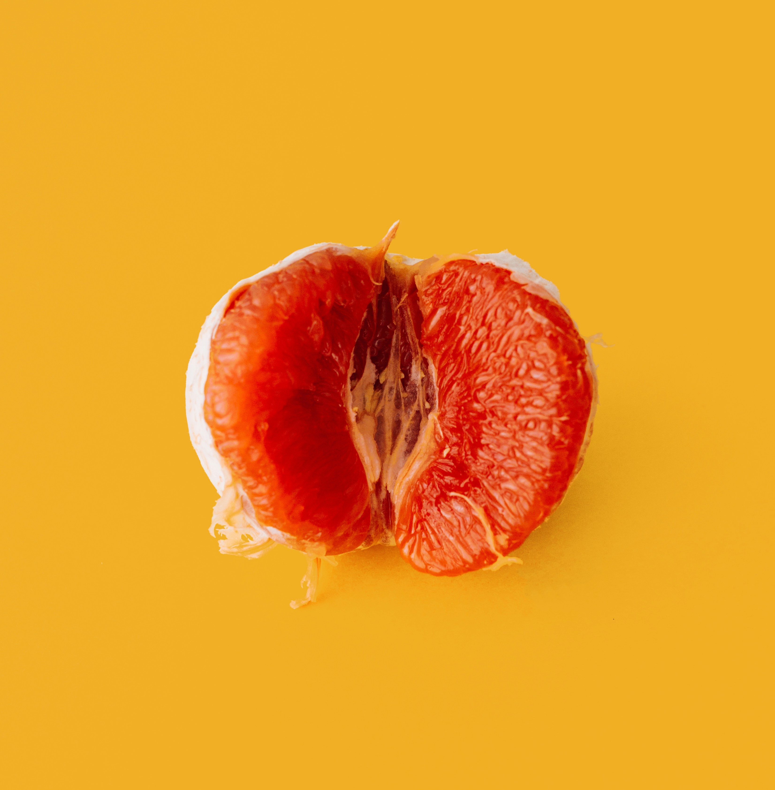
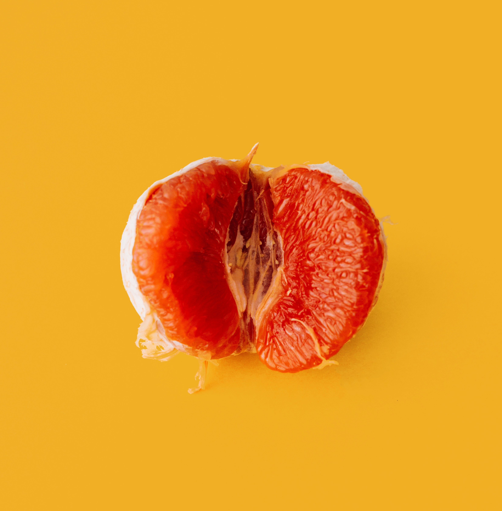

Before I help you choose your signature scent you have to understand the science of scent and its power.
Here are some examples
- Lavender: relaxatoin
- Citrus: gaining energy and productivity
- Chocolaye: links to experience of reward and pleasure
- Sandalwood: increases sensuality
 
